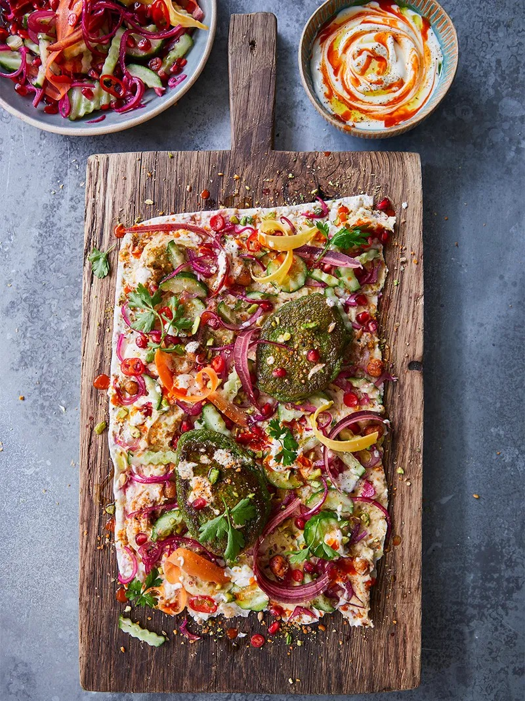

Falafels

Description
This recipe is for falafel fritters, with hummus and crunchy salad pickles.
It is ideal when served with a vegan flatbread.
Ingredients
- 150g frozen peas , broad beans, or edamame beans
- 1 heaped tablespoon self-raising flour
- 1 preserved lemon
- quarter teaspoon cumin seeds
- 6 flatbreads
- 1 tbsp ground coriander
- 60 g shelled unsalted pistachios (optional)
- 100 g soya yoghurt
- hot chilli sauce
For the salad pickle:
- 1 pomegranate
- red wine vinegar
- extra virgin olive oil
- 1 red onion
- 1-2 fresh mixed-colour chillies
- 1 cucumber
- 1-2 mixed-colour carrots
- 1 bunch of fresh mint (30g)
For the hummus:
- 1 x 660 g jar of chickpeas
- 1 tablespoon unsweetened peanut butter
- half a garlic clove
- 1 lemon
- 15g fresh parsley
- olive oil
- quarter teaspoon of sweet smoked paprika
- 1 tablespoon of dukkah
Steps
- To make the salad pickle, squeeze half the pomegranate juice into a large, shallow bowl. Top it up with an equal amount of red wine vinegar, then drizzle over some extra virgin olive oil and give it all a good mix.
- Peel and finely slice the red onion, finely slice the chillies (deseed if you like), matchstick the cucumber (I like to use a crinkle-cut knife) and shave the carrots into ribbons, then combine it all in the bowl.
- Holding the remaining pomegranate half cut-side down, bash it with the back of a wooden spoon so the seeds tumble out over the salad. Pick and tear over half the mint leaves, then gently toss and leave aside until needed.
- For the houmous, tip half the jar of chickpeas into a food processor and season with sea salt and black pepper. Add the peanut butter and 2 tablespoons of extra virgin olive oil, peel and add the garlic, finely grate in half the lemon zest and squeeze in all the juice. Whiz until super-smooth, then transfer to a shallow serving bowl. Pick over a few parsley leaves and drizzle with a little extra virgin olive oil.
- Spoon 2 tablespoons of the chickpeas into a non-stick frying pan over a medium heat with 1 tablespoon of olive oil. Sprinkle over the paprika and dukkah, and cook for 5 minutes, or until the chickpeas are crisp, then tip over the houmous.
- For the falafel fritters, place the remaining chickpeas and mint leaves into the food processor, along with the peas and self-raising flour. Quarter the preserved lemon, removing any pips, and pulse until combined.
- Drizzle 1 tablespoon of olive oil into a large frying pan over a medium heat, then dollop in heaped teaspoons of the falafel batter. Fry for 4 minutes on each side, or until golden, sprinkling over the cumin seeds when you flip them.
- Now it’s time to bring everything together. Warm the flatbreads in the oven for a few minutes and crush the pistachios (if using) in a pestle and mortar. Put the soya yoghurt into a bowl and stir in a few dashes of chilli sauce. Load up your flatbreads with a bit of everything, pick over the remaining parsley leaves, then roll up and tuck in!